INSDR Wellness — Confidential Brand Manifesto
/sɪɡˈnɑːl/
Enter password to view.
Skincare is the daily practice for the surface of you. Cellcare is the daily practice for the inside — the cells that run every system in your body. Same shape. Same rhythm. The part that's been missing from your routine because no one taught you the word yet.
皮膚保養是你外在的每日功課。細胞保養是你內在的每日功課 — 維持你全身運轉的那幾十兆顆細胞。節奏一樣、邏輯一樣，只是還缺一個詞，因為還沒有人教你。
Cellcare is as shoppable as a multivitamin — universal, daily, obvious, no explanation required. And as elevated as skincare — a ritual you don't skip, a practice that becomes identity. The category that's been missing from your shelf.
細胞保養跟綜合維他命一樣好買 — 日常、通用、不用解釋。但跟皮膚保養一樣有儀式感 — 不會想跳過、會變成身份認同的一部分。一個你架上始終缺席的品類，現在要補上了。
Skincare built a category worth over $150B because somebody taught you the word routine. Cellcare is the same move, for what's underneath.
皮膚保養之所以成就一個超過 $150B 的市場，是因為有人教會你「日常保養」這個概念。細胞保養要做的是一樣的事，只是對象是你底下的細胞。
Every cell in your body runs on ATP — the molecule that powers everything cells do. Repair DNA. Build proteins. Fire a thought. But ATP doesn't work alone. It only does its job when magnesium is attached to it. About 9 out of 10 ATP molecules in your cells carry magnesium. The rest sit idle.
你身上每一顆細胞都在燒 ATP — 那是驅動一切的分子貨幣。修復 DNA、合成蛋白質、發出一個念頭，都靠它。但 ATP 不是自己就能上工。它得先跟鎂結合，才算數。細胞裡大約 9 成的 ATP 都帶著鎂，剩下的只能閒置。
And energy is just the start. Magnesium activates more than 600 enzymes — the molecular machinery your cells use to repair DNA, build proteins, send nerve signals, contract muscle, keep the heart firing in rhythm, and form bone. Most of what happens inside a cell, magnesium is what makes it possible.
而且能量只是起點。鎂會啟動超過 600 種酵素 — 你細胞修 DNA、造蛋白質、傳遞神經訊號、收縮肌肉、讓心臟規律跳動、形成骨骼，這些分子作業，絕大多數都得靠鎂才能跑。
Creatine is the fastest way your cells recharge ATP. That recharge step needs magnesium too.
肌酸是細胞幫 ATP 回充最快的一條路。而那個回充步驟，同樣需要鎂。
The upstream machinery is quietly underpowered before you take another supplement on top of it. Most supplements ask your cells to do work. Cellcare is what gives the machinery the ability to do it.
在你往上疊加其他保健品之前，上游這套基礎供能系統其實一直處在低度運轉的狀態。多數保健品是叫你的細胞去做事。細胞保養是給那套系統把事做好的基本能力。
Every signal SKU carries magnesium — in the form that fits the layer. Bisglycinate in the foundation and the flagship, where the cell needs to activate. L-threonate in the evening chew, where the cell needs to settle.
每一支 signal SKU 都帶著鎂 — 形式對應層級。基礎與旗艦是雙甘胺酸鎂，是細胞需要啟動的時候。夜間咀嚼錠是蘇糖酸鎂，是細胞需要安定下來的時候。
Not a longevity pill. A daily practice — because your cells burn ATP every second. Creatine recycles it. Magnesium activates it. Ribose feeds it. Betaine builds it. Methylated B-vitamins enable it. A packet a day — two pearl chews — the first in your cellcare routine. Five branded actives, one ATP-machinery story: NNB Pürest Creatine™ + Albion TRAACS® Mg bisglycinate + BetaPower® Betaine (TMG) + Bioenergy Ribose® + active-form methylated B-complex. Very subtle natural flavor, no sugar, no sugar alcohols. 30 packets per carton — one month at a time.
不是長壽藥丸。是一項每日習慣 — 因為你的細胞每秒都在燒 ATP。肌酸負責回收。鎂負責啟動。核糖負責供給。甜菜鹼負責建造。活性 B 群讓這一切跑得起來。一天一包，兩顆珠光咀嚼錠 — 你細胞保養日常的第一步。五項註冊品牌成分，一條 ATP 機制的故事：NNB Pürest Creatine™ + Albion TRAACS® 鎂雙甘胺酸鹽 + BetaPower® 甜菜鹼 (TMG) + Bioenergy Ribose® + 活性甲基化 B 群。極淡的自然風味，無糖、無糖醇。一盒 30 包 — 一次一個月份。
The daily core act. A dual-chew soft chew packet — one substrate chew + one keystone chew, two chews × 90 seconds each. Three-phase flavor arc: bright bite → warm heart → lingering close (plus grounded clarity post-chew). Seven registered ingredient brands. Mechanism-only claims. 30 packets per container, one month at a time.
每日的核心動作。一包雙顆爆漿咀嚼錠 — 一顆基質咀嚼 + 一顆關鍵咀嚼，兩顆各含 90 秒。三段式體驗弧線：爽脆咬感 → 溫熱爆漿 → 落地般的清晰感。七支註冊品牌成分。純機制訴求。一罐 30 包，一次一個月份。
The cellular maintenance window. Cells don't stop working when you do — overnight is when they clear, recycle, rebuild. Mitophagy clears it. Magnesium quiets it. Glycine signals it. Taurine cushions it. Apigenin tunes it. A packet a day — two chews — the evening cellcare chew. Five branded actives, one cellular-recycling story: Mitopure® Urolithin A + Magtein® Mg L-Threonate + Glycine + Taurine + Apigenin. Mechanism-only claims. 30 packets per carton — one month at a time.
細胞維護的時段。當你停下時，細胞並沒有 — 夜間是它們清理、回收、重建的時刻。粒線體自噬清理。鎂安定。甘胺酸傳訊。牛磺酸緩衝。芹菜素調節。一天一包，兩顆咀嚼錠 — 夜間細胞保養咀嚼錠。五項註冊品牌成分，一個細胞回收的故事：Mitopure® Urolithin A + Magtein® 蘇糖酸鎂 + 甘胺酸 + 牛磺酸 + 芹菜素。純機制訴求。一盒 30 包 — 一次一個月份。

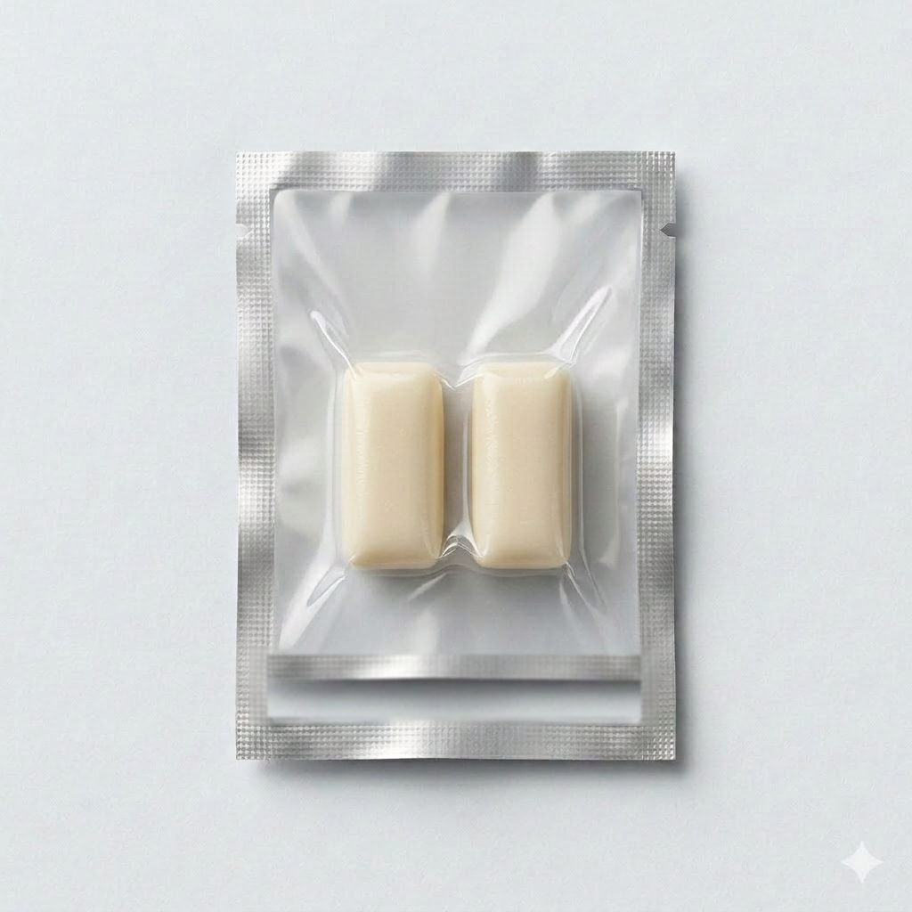
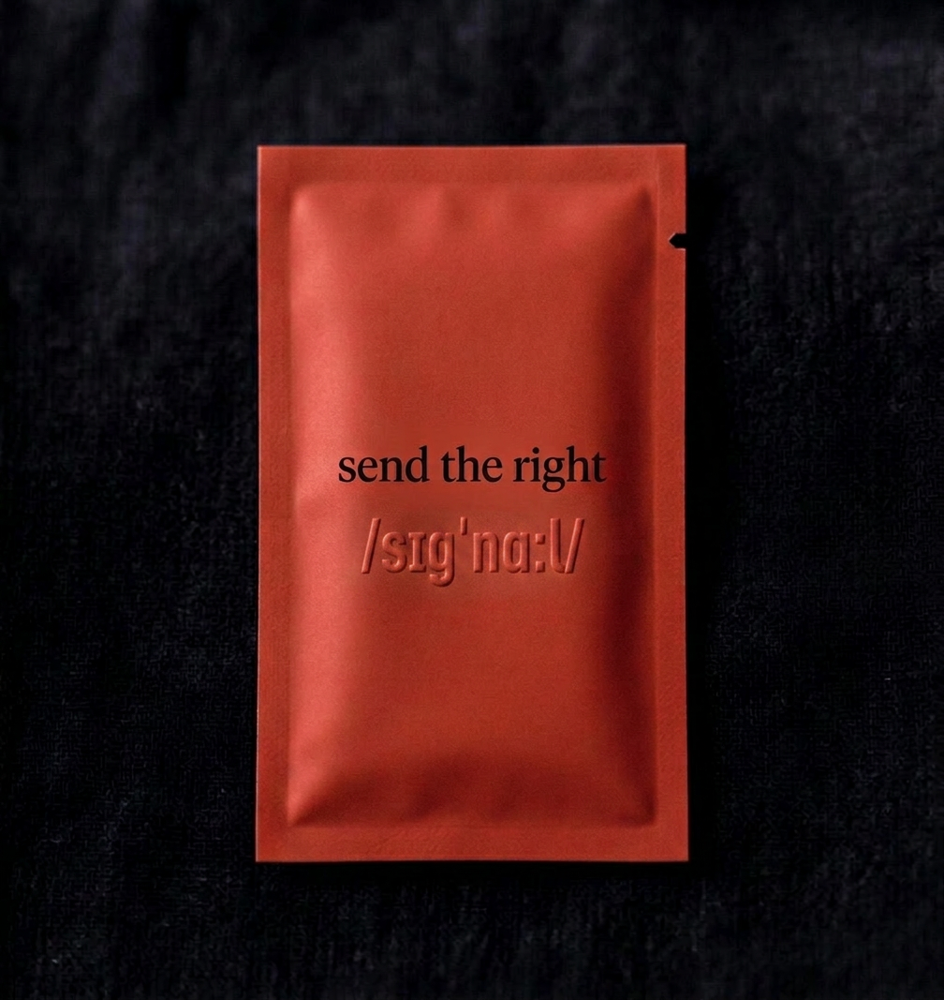
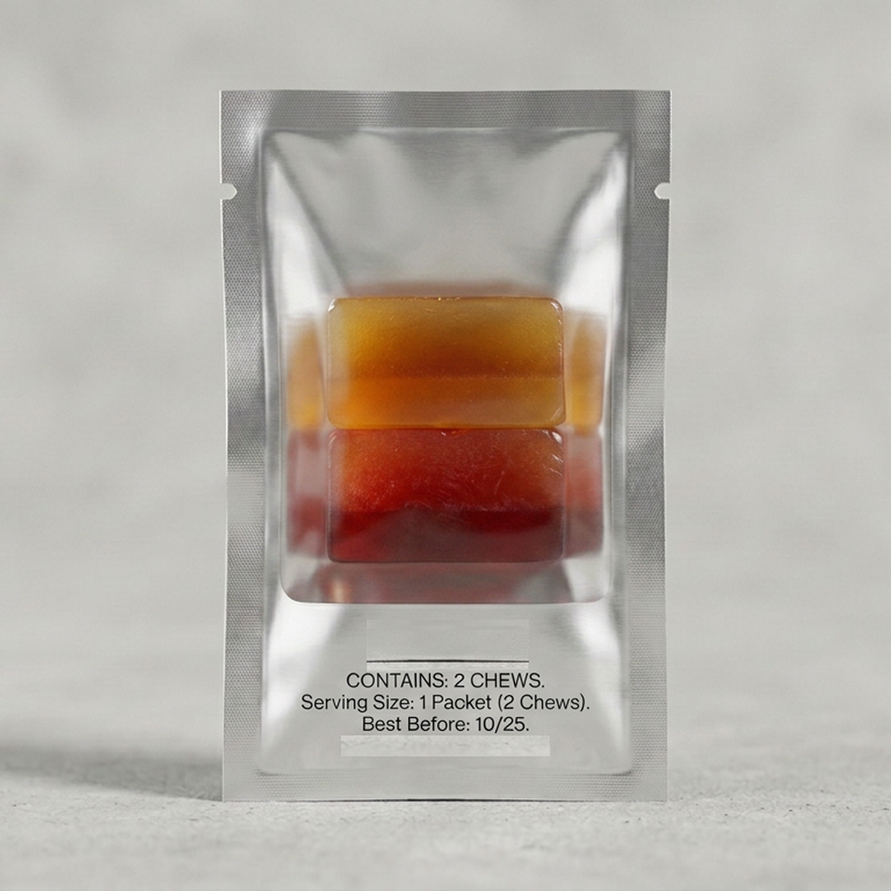
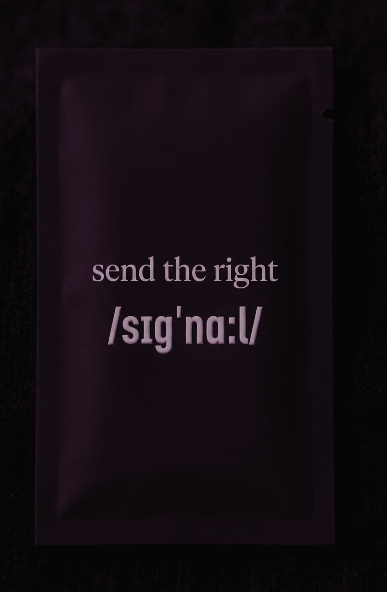
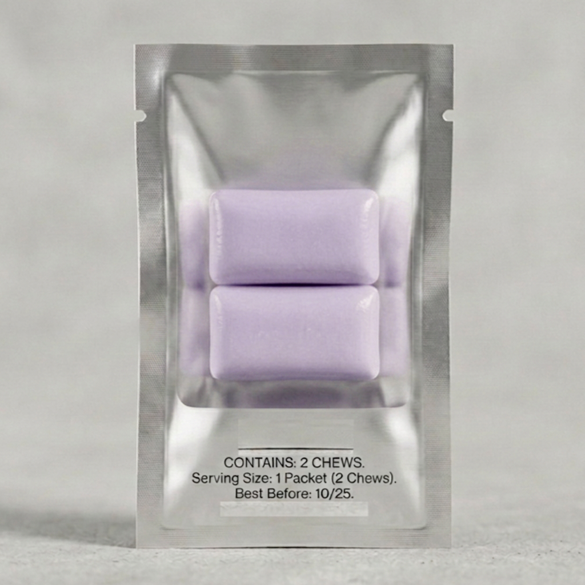
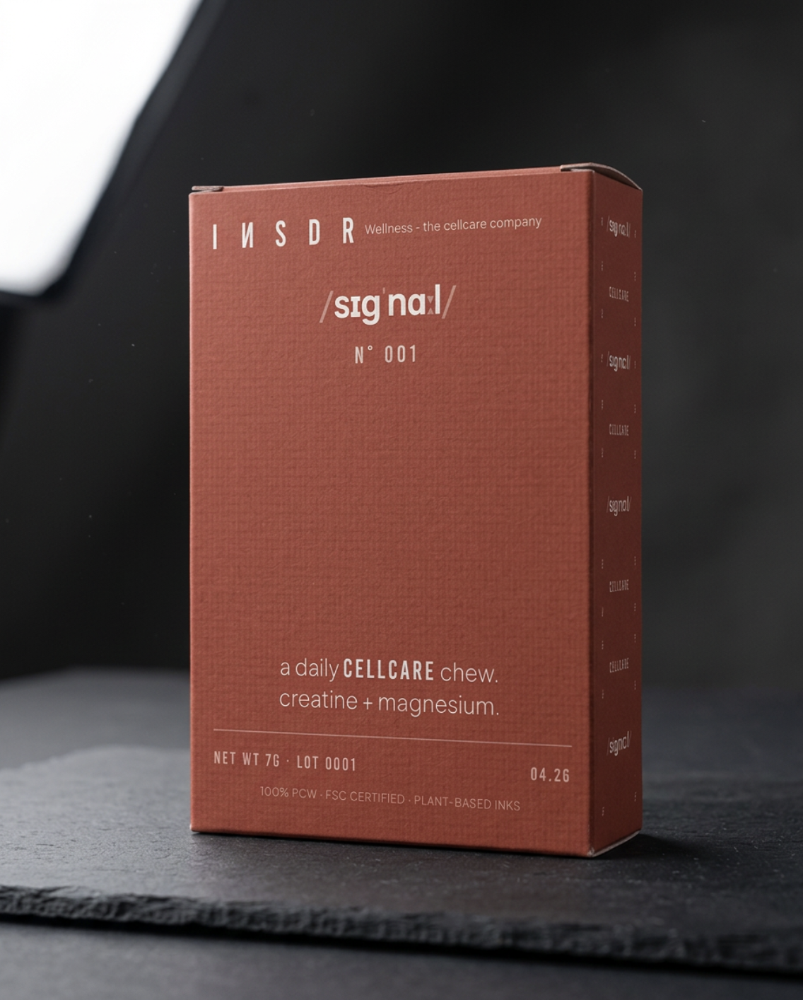
A pill is forgotten. A powder is a project. A gummy hides the dose in sugar. A capsule asks for water. A chew is the only format that's daily, dosed, and ritualized — without water, without mixing, without pretending to be candy.
藥丸會被忘記。粉狀是工程。軟糖把劑量藏在糖裡。膠囊還得配水。咀嚼錠是唯一能每天、有劑量、變成儀式的格式 — 不用水、不用調配、不用假裝是糖果。
Hi-Chew–adjacent matrix. Hard initial bite. Progressive ninety-second dissolve. Two chews per packet. The format is the practice.
Hi-Chew 風格的咀嚼基質。第一口有硬度。九十秒漸進溶解。一包兩顆。格式本身，就是練習。
The flagship packet's flavor system is engineered to release in waves over a thirty-to-sixty-second consumption window. A single uniform soft chew matrix — Hi-Chew–adjacent. Not a gummy. Not pectin-set. Not gelatin-only. Not filled. Not co-extruded. Three phases of flavor inside one chew, plus a body-feel after.
Phase 1 — the bright bite (0–5 sec). First chew. High-volatility, water-soluble top notes flash off as saliva contacts the matrix. Bright. Awakening. Immediate. A subthreshold cool chemesthetic front layered in.
Phase 2 — the warm heart (10–30 sec). Mid-chew. Medium-volatility mid notes release as matrix dissolution exposes more surface area. Gingerol and cinnamaldehyde at the heart of the flavor.
Phase 3 — the lingering close (30–60 sec). Late chew and finish. Low-volatility, lipid-soluble base notes carry through as the matrix gives up its fat phase last. A satisfying, lingering close. Subthreshold warm chemesthetic back.
Plus the post-chew body-feel: in the twenty to sixty minutes after, a sense of grounded clarity. Warm. Settled. Distinct from caffeine. Not part of the flavor arc itself — the daily proof that something is happening underneath.
SuppCo is a supplement-tracking app where stackers log what they actually take and share their stacks with each other. Past 200,000 products tracked, tens of thousands of users actively logging — their top-stacked list is the closest thing the supplement industry has to a real-time index of what the practice looks like in 2026.
SuppCo 是一個紀錄保健品的 app，使用者會在上面登錄自己實際吃的產品，也會分享自己的配方組合。目前已經累積超過 20 萬筆產品紀錄，好幾萬個活躍用戶在上面持續更新——他們整理出來的「熱門組合排行榜」，大概就是 2026 年保健市場最接近真實使用行為的一份即時指標。
In SuppCo's 2026 top ten, creatine claims three of the slots — across brands targeting completely different audiences. Roughly a third of the people stacking creatine are women; the core demographic is in their thirties and forties; and they're taking it for cognitive function and everyday energy as much as for the gym. Magnesium glycinate shows up three times too, across price tiers from mass-market (Nature's Bounty) to practitioner-grade (Pure Encapsulations). Pure Encapsulations Magnesium Glycinate alone has been added by 25,386 unique users in 2026 — the biggest upward jump on the list.
在 SuppCo 的 2026 年前十大排行榜裡面，肌酸一個人就佔了三個名額——而且來自三個目標族群完全不一樣的品牌。大概有三分之一的肌酸使用者是女性；主要年齡層落在三十到四十多歲；她們吃肌酸的理由，和去健身房一樣常見的，是為了日常思緒與體力。甘胺酸鎂也出現三次，價位從大眾市場（Nature's Bounty）一路到專業級（Pure Encapsulations）。光是 Pure Encapsulations 的甘胺酸鎂，2026 年已經有 25,386 個不同用戶加進自己的清單——是這個排行榜上升幅度最大的一支產品。
signal N°001 is creatine + magnesium in one packet, two chews. We didn't pick the molecules. The stackers did. We built the chew that makes the stack a single act.
signal N°001 就是一口咬下，同時吃到肌酸加鎂。不是我們去挑這些分子。是這些使用者選的。我們只是做了一個咀嚼產品，讓這件事一次完成。
signal N°001 creatine + Mg (foundation). signal N°002 flagship (daily core act). Evening chew (wind-down, coming after flagship). Three touchpoints, same shape as a skincare routine.
signal N°001 肌酸 + 鎂（基礎打底）。signal N°002 旗艦（每日核心動作）。夜間咀嚼錠（放鬆收尾，旗艦之後推出）。三個接觸點，輪廓跟一套皮膚保養流程一樣。
Every future product extends the cellcare routine — rhythm, cadence, format. Never into outcome categories. We will never make signal Hair. Never signal Sleep. Never signal Focus. Those already exist; they're the supplements cellcare supports.
未來所有產品都是在延伸這套細胞保養日常 — 節奏、頻率、格式一致。絕不跨進功效品類。我們不會出 signal 頭髮。不會有 signal 睡眠。不會做 signal 專注。那些早就存在了；它們就是細胞保養在背後支撐的那些保健品。
Most supplements lose to geography. They get tucked into a cabinet, then a drawer, then forgotten. The product you don't see is the product you stop taking. Adherence is a retention problem before it's a formulation problem. So we designed against the cabinet.
多數保健品輸在地理位置。先被塞進櫥櫃，再被推進抽屜，然後就被忘了。你看不到的產品，就是你會停止吃的產品。持續使用與否，在配方問題之前，首先是留存的問題。所以我們從設計端就對抗櫥櫃。
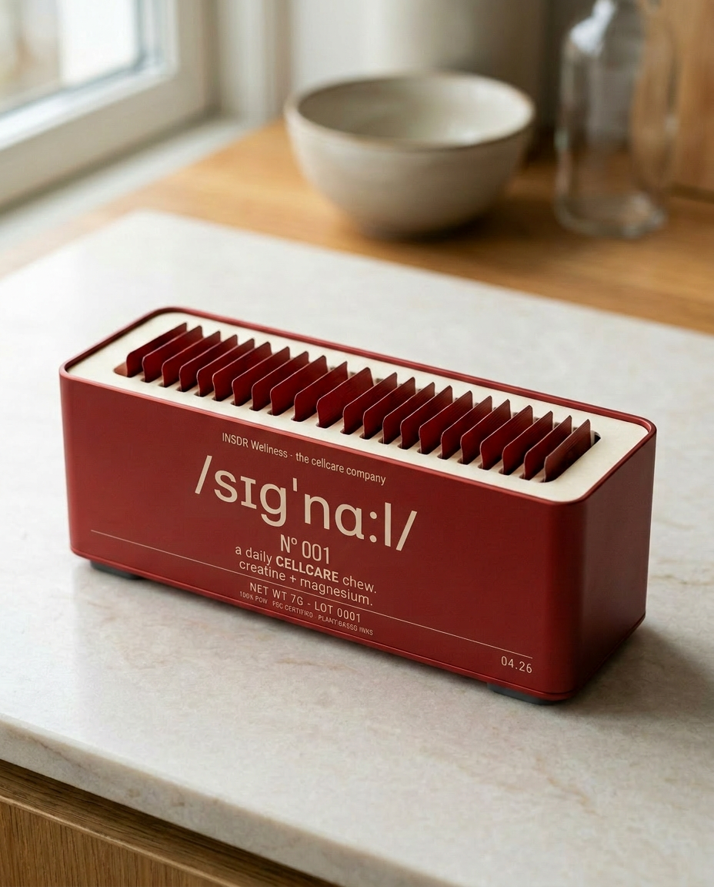
Anodized aluminum shell. Signal red, matte. Machined thick with laser-etched typography on the front face. Thirty packets stand on edge inside, visible through a window cut into the top. It arrives once, with your first month. It stays on the counter for years. Every glance is a reminder.
陽極處理鋁合金外殼。signal 紅、霧面。厚實 CNC 加工，正面雷射蝕刻字樣。三十包直立插在裡面，透過頂部開窗一眼可見。它只來一次，跟著你的第一個月。然後就待在檯面上好幾年。每一次瞥見，都是一次提醒。
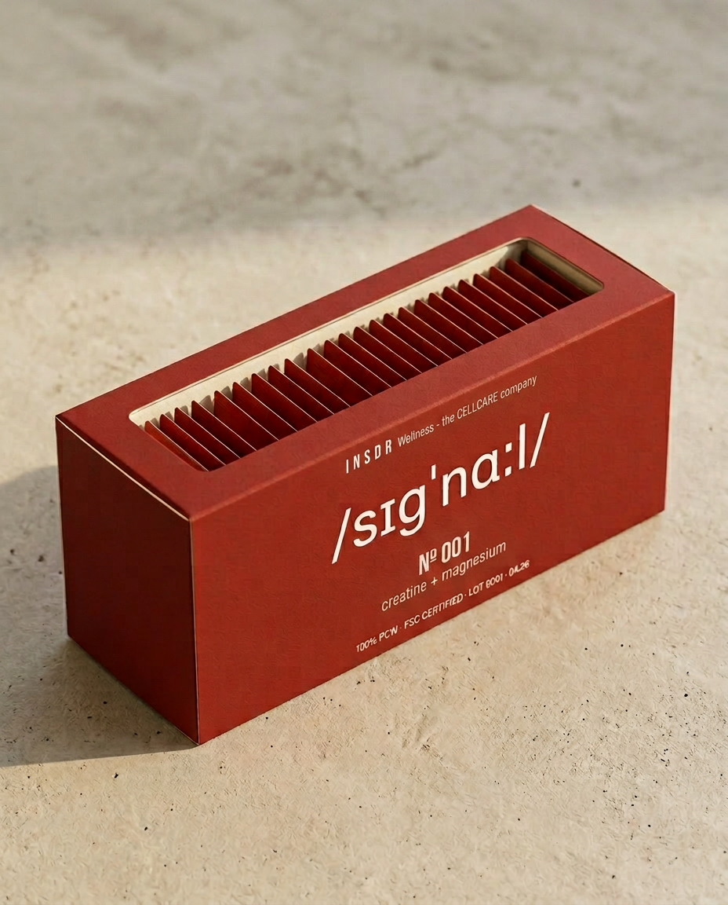
Every month after that, a slim paperboard refill arrives in the mail — thirty fresh packets pre-loaded in an FSC-certified cassette. Drop it into the aluminum shell. No tools, no assembly, no disposable plastic. The ritual is the refill.
之後每個月，一份輕薄的紙板補充裝會寄到你家信箱 — 三十包新鮮內容預載在一卡 FSC 認證的紙匣裡。放進鋁合金外殼就好。不用工具、不用組裝、沒有一次性塑膠。補充這個動作，本身就是儀式。
Built to last. Shipped small. Counted daily. The vessel is the adherence mechanism — because the supplement you see is the supplement you take.
打造來長久使用。運送小巧。每天數著吃。那個器皿本身就是持續使用的機制 — 因為你看得到的保健品，才是你會吃的保健品。
The vessel sits next to a habit you already have. After your skincare. After your coffee. After your teeth. Cellcare stacks onto behavior that's already in your rhythm. Not "every morning." Not "with breakfast." After the thing you already do.
這個器皿，會放在你已經有的習慣旁邊。保養完皮膚之後。喝完咖啡之後。刷完牙之後。細胞保養疊在你已經有的節奏上。不是「每天早上」。不是「配早餐」。在你已經會做的那件事之後。
The flagship keystone chew — the red one — carries one ionic activator plus three mitochondrial protectors. Each is a registered ingredient brand with its own peer-reviewed clinical evidence at the dose we use. No proprietary blends. No "& other ingredients." The fine print is the whole print.
旗艦的關鍵咀嚼錠 — 紅色那顆 — 乘載一種離子活化劑加上三種粒線體保護劑。每一支都是有註冊品牌的成分，在我們用的劑量下擁有獨立、經同儕審查的臨床證據。沒有專利複方。沒有「及其他成分」。最細的那行字，就是全部。
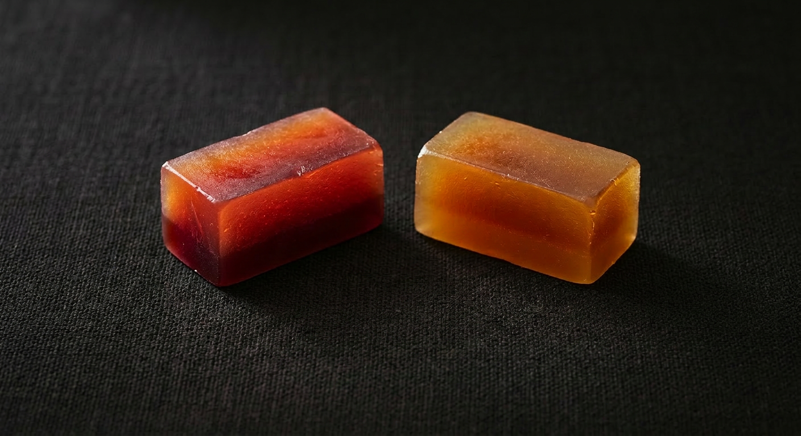
The amber substrate chew carries BioPQQ® (Mitsubishi Gas Chemical) · SpermidineLIFE® (Longevity Labs) · gingerol. Plus sensory-dose cofactors in the keystone chew: Suntheanine® (Taiyo) + N-Acetyl L-Tyrosine + L-citrulline. (Methylated B-complex lives in N°001 — the foundation tier — not here. Stack the two SKUs and you cover the full daily picture without overlap.)
琥珀色基質咀嚼錠乘載BioPQQ®（三菱瓦斯化學）· SpermidineLIFE®（Longevity Labs）· 薑辣素。加上關鍵咀嚼錠中的感官劑量輔因子：Suntheanine®（Taiyo）+ N-乙醯-L-酪胺酸 + L-瓜胺酸。（活性甲基化 B 群放在 N°001 — 基礎層 — 不放在這裡。把兩支 SKU 疊起來吃，剛好覆蓋完整的日常，不重複。）
Mechanism only. No outcome claims. We describe what the cell uses, what the machinery does. We don't sell you an energy feeling, a skin outcome, a sleep fix. Specialist outcomes are the job of specialist supplements. Our job is the cellcare they all depend on.
只談機制。不做效果訴求。我們陳述細胞用什麼、這套系統做什麼。我們不賣你一種有精神的感覺、一種皮膚的結果、一種睡眠的解方。特定功效是專門保健品的事。我們的事，是它們全都依賴的細胞保養。
In April 2026, Unilever acquired Grüns — a daily-greens packet brand, three years old, packet-in-container format — for $1.2 billion. Unilever didn't buy a formulation; they bought a habit: 95,000+ five-star reviews, 1M+ customers, 10M gummies shipped daily. The daily-packet architecture at premium price point is now validated at acquisition scale.
2026 年 4 月，Unilever 收購了 Grüns — 一個每日綠色零食包品牌，成立三年，小包裝入盒的格式 — 收購價 $1.2 billion。Unilever 買的不是配方；他們買的是一個習慣：95,000+ 五顆星評價、1M+ 顧客、每日出貨一千萬顆軟糖。每日一包、高單價的架構，已經在併購規模上被驗證了。
At the same time, cellular-health has become the dominant trade-press narrative of 2026 — NutraIngredients, BeautyMatter, Vogue Scandinavia, Glossy all running "mitochondrial" or "cellular energy" framings. The phrase is omnipresent. No consumer brand has claimed it yet. That won't last.
同時間，細胞健康已經變成 2026 年產業媒體的主流敘事 — NutraIngredients、BeautyMatter、Vogue Scandinavia、Glossy 都在談「粒線體」或「細胞能量」的框架。這個詞無所不在。還沒有一個消費品牌真的佔住它。這狀況不會太久。
The 2025 Weissig review in the Journal of Mitochondria, Plastids and Endosymbiosis argued that mitochondrial dysfunction sits upstream of all other hallmarks of aging — DNA repair, autophagy, telomere maintenance, collagen synthesis. When the energy economy fails, everything downstream underperforms. That biology is the foundation underneath cellcare. Every specialist supplement on your shelf is asking cells to do work. Cellcare is what lets them.
2025 年 Weissig 發表在 Journal of Mitochondria, Plastids and Endosymbiosis 的回顧論文指出，粒線體功能失衡，座落在所有其他老化指標的上游 — DNA 修復、自噬作用、端粒維持、膠原蛋白合成。當能量經濟崩盤，下游的一切都會表現不如預期。那篇生物學論述，就是細胞保養底下的基石。你架上每一罐專門保健品，都在叫細胞做事。細胞保養，是讓它們做得到。
So why not just build another supplement? The macro signals are green — you'd expect us to pick a lane. We're not picking one. Every supplement on the shelf plays the same game: sleep, energy, focus, beauty, longevity. You don't win a crowded game by competing harder inside it. You win by refusing to play, and opening a new one small enough to anchor.
那幹嘛不乾脆再做一支新的保健品就好？宏觀訊號是綠燈 — 照理說我們該挑一條賽道。但我們不挑。架上每一款保健品都在玩同一場遊戲：睡眠、能量、專注、美妍、長壽。在擁擠的遊戲裡，你不可能靠更用力競爭取勝。你贏的方式是拒絕下場，然後開一場夠小、小到你能定錨的新遊戲。
AG1 sells you the whole answer in a scoop. IM8 ships the same architecture in a different package. We don't compete with them — we sit underneath them. Cellcare gives cells what every greens drink, every multivitamin, every specialist supplement on your shelf depends on to actually work. Necessary, but not sufficient. The category underneath the categories.
AG1 把整個答案塞進一勺。IM8 是同樣的架構、不同的包裝。我們不跟它們競爭 — 我們坐在它們底下。細胞保養給細胞的，是每一杯綠粉、每一顆綜合維他命、每一款專門保健品實際上都需要的那個東西。必要，但不充分。品類底下的品類。
The first-mover window is short. Competitors will enter; a new equilibrium will form around whoever anchors it. What survives is the anchor position — brand, habit, distribution. We're building to be the anchor, not another bottle on the shelf.
先行者窗口很短。競爭者會進來；新的平衡會圍繞著定錨的那個人重新成形。存活下來的是定錨的位置 — 品牌、習慣、通路。我們要成為那個定錨者，不是架上又一個瓶子。
The category position is the thesis. Three assets are the moat:
品類定位是論點。這三項資產才是護城河：
Send a Signal. A $5 physical-mail demo with the brand name as the verb. No supplement runs this. Acquisition channel and category-creation engine in one mechanic.
Send a Signal。$5 的實體寄送試吃，品牌名就是動詞。沒有保健品在做這件事。獲客通路與品類創造引擎，合在同一個機制裡。
The signal sound bite. Two tones drift from a 10Hz binaural beat to unison A4. Short, specific, ownable. Audio meant to be heard once at the first ritual and recalled across every subsequent one — a sonic asset no other supplement has bothered to build.
signal 聲音識別。兩個音從相差 10Hz 的雙耳節拍，漂移到 A4 的合一音。短、具體、可擁有。在第一次儀式聽過一次，之後每一次都會被想起 — 一個沒有任何保健品願意打造的聲音資產。
The multi-phase flavor profile. Bright bite → warm heart → lingering close. A flavor system engineered to release in waves over a thirty-to-sixty-second window. The defining sensory signature — and the most consumer-facing brand asset signal owns.
多階段風味樣貌。明亮的第一口 → 溫熱的核心 → 餘韻收尾。一套設計過的風味系統，在三十到六十秒之間分波段釋放。signal 最具決定性的感官簽名 — 也是最直接面向消費者的品牌資產。
Patents are table stakes. These are the things competitors can't retroactively assemble.
專利只是入場券。這些東西，競爭者沒辦法事後組裝出來。
Most brands sell you the whole answer. We don’t. Signal is necessary, but not sufficient. Your cells run on ATP — and they also run on what you do with the rest of your day. The chew gives them the substrate. The way you live tells them when to use it.
多數品牌賣你一個完整的答案。我們不是。Signal 是必要的，但不是充分的。你的細胞需要 ATP，也需要你一天當中做的其他事。咀嚼給它們基質；你怎麼過日子，告訴它們什麼時候用這些基質。
That’s the practice. And the practice is how we begin to build a tribe — people who know the chew is one part of cellcare, not the whole of it.
這就是那個「做法」。而這個做法，才是你建立一群人跟你的方式——他們知道，這一包咀嚼是細胞保養的一部分，不是全部。
Exercise tells your cells to build more mitochondria. Signal gives those mitochondria the magnesium they need to fire. The chew is the substrate; the workout is the signal.
運動會告訴你的細胞：「再多長一些粒線體出來。」然後 Signal 給這些粒線體它們需要的鎂。咀嚼是基質；運動是那個訊號。
Deep sleep is when your cells take out the trash — clearing waste and rebuilding what got worn down. No supplement replaces that window. Signal supports the day; sleep does the work overnight.
深層睡眠的時候，你的細胞才會去倒垃圾、清除廢物、把磨損的地方重建。沒有保健品能取代這個窗口。Signal 負責白天的支持，晚上是睡眠在主導。
Time-restricted eating triggers autophagy — your cells cleaning up their own damaged parts. Signal feeds the cells; fasting tells them when to clean house.
限時飲食會啟動自噬作用——細胞自己吃掉自己損壞的零件。Signal 餵養細胞，而斷食告訴它們：「該大掃除了。」
Cold plunges and saunas trigger hormetic stress — the kind that tells cells to repair. Signal supplies the substrate for that repair; the temperature swing pulls the trigger.
冰浴或桑拿會引發「激效壓力」（hormetic stress）——一種告訴細胞「啟動修復」的機制。Signal 提供修復要用的基質；溫度的高低變化，負責扣下那個板機。
Light at sunrise. Meals in the daylight window. Your cells run on a clock, and that clock answers to the sun. Signal supports the metabolism; the clock decides when to use it.
日出時看光。白天吃飯。你體內有一個時鐘，這個時鐘聽太陽的。Signal 支持代謝，但什麼時候用這個代謝能力——時鐘決定。
Magnesium is one mineral; sodium and potassium do the other half of the work. Cell membranes hold an electrical charge that depends on all three. Signal handles magnesium; you handle the rest.
鎂只是其中一種礦物質。鈉跟鉀做了大部分的工作。細胞膜上的電荷，靠這三個一起維持。Signal 幫你搞定鎂，其他的你來。
This is how the tribe forms. Not around a product, but around a practice. We don’t sell you cellcare. We hand you the part you can hold — and trust you to build the rest.
這就是那一群人形成的方式。不是圍繞一個產品，而是圍繞一個「做法」。我們沒有賣你「細胞保養」這件事。我們只是把你可以拿在手上的那塊交給你——然後相信你會自己去把剩下的一切蓋起來。
You don’t feel your moisturizer working. You wouldn’t stop using it. Skincare's job is upkeep — the felt-outcome stuff is what you go to a dermatologist for. Cellcare is the same shape. When you want to feel something, that's what your other supplements are for.
你不會真的「感覺到」保濕乳液在作用。但你也不會因此就不擦了。皮膚保養的本質是維持 — 那些「有感」的效果，是你要去找皮膚科醫師處理的事。細胞保養是同樣的邏輯。當你想要「有感覺」的時候，那是其他保健品的工作。
What you do feel from signal is the chew itself — the bite, the burst, the daily act. That's the receipt. What's happening biologically is upstream of feel. The ritual is the proof; your cells do the rest.
你從 signal 真正感受到的，是咀嚼時的口感、爆漿、每天這個動作。那才是收據。 身體裡發生的生理機制，都在感受的上游。儀式本身就是證明；細胞會處理好後面的事。
The supplements that promise a feel deliver one of three things: a stimulant, a placebo, or a 90-day outcome you mistake for the product. Cellcare is the floor under all of that. You're not supposed to feel it. You're supposed to use it.
那些主打「有感」的保健品，給你的不外乎是刺激劑、安慰劑，或者一個你誤以為來自產品的 90 天效果。細胞保養是所有這些東西底下的地基。你不應該去感覺它。你只需要持續使用它。
Cellcare is a category we're building. Every new category needs a vocabulary, and a reason to start before the proof is in. Send a Signal gives both.
細胞保養是我們正在打造的品類。每個新品類都需要一套詞彙，以及一個在證據完備前就值得開始的理由。Send a Signal 同時給你這兩樣。
Anyone already in the practice can Send a Signal to someone they care about. $5 — a price engineered to be honest — pays for one packet, mounted on a cream card, with an insert that teaches what cellcare is. No personalization. No sender note. Just the signal, arriving at a doorstep. The CTA on every card reads the same way: YOUR TURN → SEND A SIGNAL.
任何已經在實踐的人，都可以 Send a Signal 給他們在乎的人。$5 — 一個刻意設計成誠實的價格 — 支付一包，裱在一張奶油色卡紙上，附帶一張說明什麼是細胞保養的內頁。沒有個人化訊息。沒有寄件人留言。就只是一個 signal，送到某個人的門口。每張卡上的 CTA 都寫一樣的話：YOUR TURN → SEND A SIGNAL.
If a recipient asks what one packet does — nothing they can feel. That's not what it's there for. The packet is the format demo; the mechanism is what happens once cellcare is in their routine.
如果有人在問「一包 signal 有什麼感覺」— 沒感覺。那不是它存在的目的。這一包是形式上的展示；真正的機制，是當細胞保養進入他們的日常之後，才會發生的事。
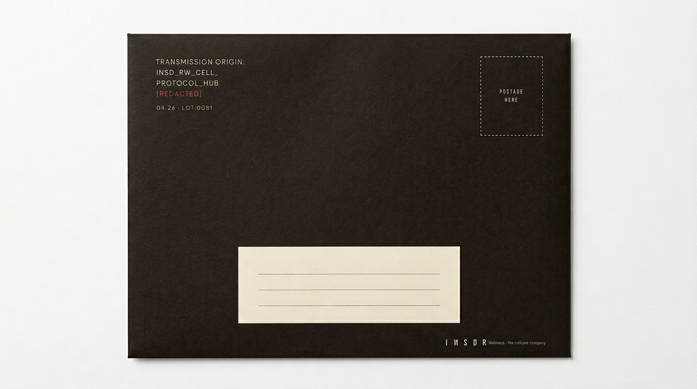
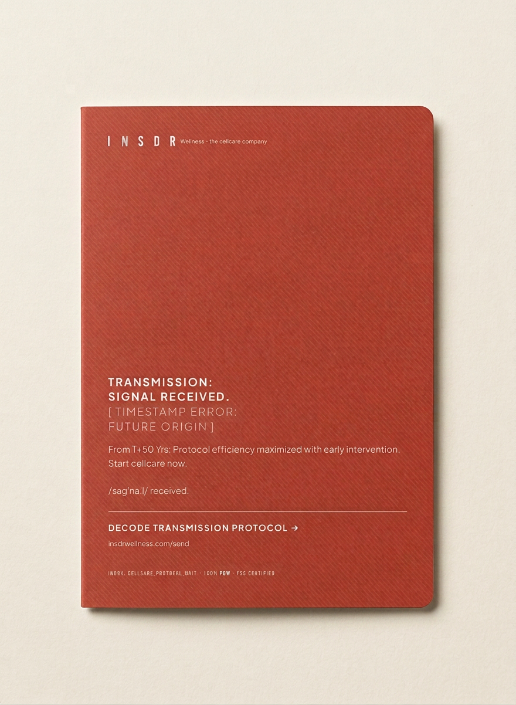
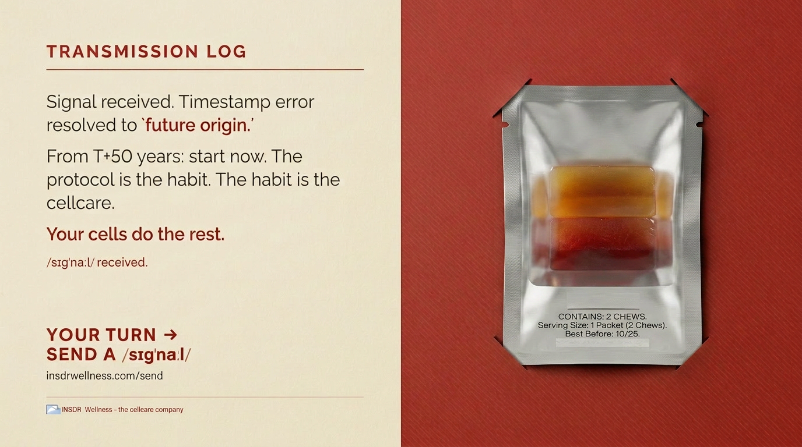
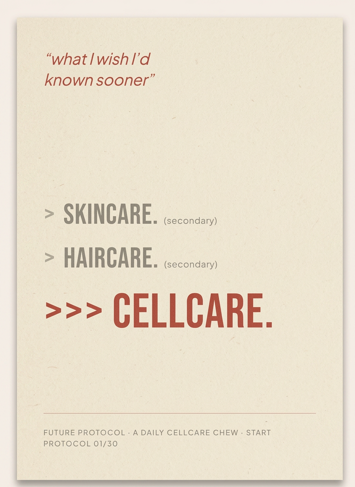
That's the acquisition story. The category story is bigger.
以上是獲客的故事。但品類的故事更大。
Every card is a small signal from someone already inside the practice — sent back to someone who hasn't started. Cellcare is a category from a future where this is daily and obvious; Send a Signal is how we let you start early. The product is the evidence. The category is the point.
每一張卡，都是一個已經在實踐的人，發回給還沒開始的人的小小 signal。細胞保養是來自一個「這一切都日常且理所當然」的未來的品類；Send a Signal 是我們讓你提早開始的方式。產品是證據。品類才是重點。
insdrwellness.com/send
A parent brand built to make cellcare a behavior, not a marketing word. Founded 2026. Bootstrap-launched. Habit-metric disciplined. Category-first positioning.
一個為「把細胞保養變成一種行為，而非行銷詞彙」而生的母品牌。2026 創立。自力啟動。以習慣指標為管理紀律。品類優先的定位。
Concept origination, brand architecture, formulation direction. Owns the thesis end-to-end.
概念原創、品牌架構、配方方向。端到端掌握整份論述。
Operations, manufacturing relationships, supply chain, day-to-day execution. The ops counterweight to the brand lead.
營運、製造關係、供應鏈、每日執行。品牌端的營運平衡輪。
Equity-aligned, operationally involved, public-facing identity partner. The face of cellcare as a daily practice — across Asia and beyond.
股權一致、營運涉入、面向公眾的身份夥伴。細胞保養作為日常實踐的代言人 — 橫跨亞洲與更遠的地方。
Runs GNC Taiwan. Supplement-industry category expertise + retail/distribution access. The second half of the APAC arc.
營運 GNC Taiwan。保健品產業的品類專業 + 零售與通路接口。APAC 弧線的後半段。
signal N°001 — creatine + magnesium — ships Q4 2026. signal N°002, the flagship dual-chew, arrives 2027. Founder's Price locks in for the first 500 names on N°002. The ritual starts before the product ships.
signal N°001 — 肌酸 + 鎂 — 將於 Q4 2026 出貨。signal N°002，旗艦雙顆咀嚼錠，2027 登場。Founder's Price 為 N°002 的前 500 個名額鎖定價格。儀式在產品出貨前就開始。